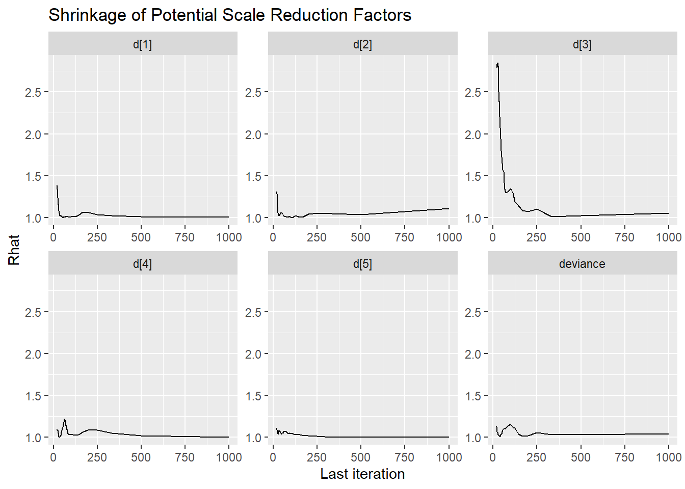

11.2 3-PL LSAT Example
In the Law School Admission Test (LSAT) example (p. 263-271), the data are from 1000 examinees responding to five items which is just a subset of the LSAT. We hypothesize that only one underlying latent variable is measured by these items. But that guessing is also plausible. The full 3-PL model we will use can be described in an equation as \[p(\boldsymbol{\theta}, \boldsymbol{d}, \boldsymbol{a}, \boldsymbol{c} \mid \mathbf{x}) \propto \prod_{i=1}^n\prod_{j=1}^Jp(\theta_i\mid\theta_i, d_j, a_j, c_j)p(\theta_i)p(d_j)p(a_j)p(c_j),\] where \[\begin{align*} x_{ij}\mid\theta_i\mid\theta_i, d_j, a_j, c_j &\sim \mathrm{Bernoulli}[p(\theta_i\mid\theta_i, d_j, a_j, c_j)],\ \mathrm{for}\ i=1, \cdots, 100,\ j = 1, \cdots, 5;\\ p(\theta_i\mid\theta_i, d_j, a_j, c_j) &= c_j + (1-c_j)\Phi(a_j\theta_j + d_j),\ \mathrm{for}\ i=1, \cdots, 100,\ j = 1, \cdots, 5;\\ \theta_i &\sim \mathrm{Normal}(0,1),\ \mathrm{for}\ i = 1, \cdots, 1000;\\ d_j &\sim \mathrm{Normal}(0, 2),\ \mathrm{for}\ j=1, \cdots, 5;\\ a_j &\sim \mathrm{Normal}^{+}(1, 2),\ \mathrm{for}\ j=1, \cdots, 5;\\ c_j &\sim \mathrm{Beta}(5, 17),\ \mathrm{for}\ j=1, \cdots, 5. \end{align*}\]
The above model can illustrated in a DAG as shown below.
Figure 11.1: DAG for 3-PL IRT model for LSAT Example
The path diagram for an IRT is essentially identical to the path diagram for a CFA model. This fact highlights an important feature of IRT/CFA in that the major conceptual difference between these approaches to is how we define the link between the latent variable the observed items.

Figure 11.2: Path diagram for 3-PL IRT model
For completeness, I have included the model specification diagram that more concretely connects the DAG and path diagram to the assumed distributions and priors.

Figure 11.3: Model specification diagram for the 3-PL IRT model
11.2.1 LSAT Example Using JAGS
jags.model.lsat <- function(){
#########################################
# Specify the item response measurement model for the observables
#########################################
for (i in 1:n){
for(j in 1:J){
P[i,j] <- c[j]+(1-c[j])*phi(a[j]*theta[i]+d[j]) # 3P-NO expression
x[i,j] ~ dbern(P[i,j]) # distribution for each observable
}
}
##########################################
# Specify the (prior) distribution for the latent variables
##########################################
for (i in 1:n){
theta[i] ~ dnorm(0, 1) # distribution for the latent variables
}
##########################################
# Specify the prior distribution for the measurement model parameters
##########################################
for(j in 1:J){
d[j] ~ dnorm(0, .5) # Locations for observables
a[j] ~ dnorm(1, .5); I(0,) # Discriminations for observables
c[j] ~ dbeta(5,17) # Lower asymptotes for observables
}
} # closes the model
# initial values
start_values <- list(
list("d"=c(1.00, 1.00, 1.00, 1.00, 1.00),
"a"=c(1.00, 1.00, 1.00, 1.00, 1.00),
"c"=c(0.20, 0.20, 0.20, 0.20, 0.20)),
list("d"=c(-3.00, -3.00, -3.00, -3.00, -3.00),
"a"=c(3.00, 3.00, 3.00, 3.00, 3.00),
"c"=c(0.50, 0.50, 0.50, 0.50, 0.50)),
list("d"=c(3.00, 3.00, 3.00, 3.00, 3.00),
"a"=c(0.1, 0.1, 0.1, 0.1, 0.1),
"c"=c(0.05, 0.05, 0.05, 0.05, 0.05))
)
# vector of all parameters to save
param_save <- c("a", "c", "d", "theta")
# dataset
dat <- read.table("data/LSAT.dat", header=T)
mydata <- list(
n = nrow(dat), J = ncol(dat),
x = as.matrix(dat)
)
# fit model
fit <- jags(
model.file=jags.model.lsat,
data=mydata,
inits=start_values,
parameters.to.save = param_save,
n.iter=20000,
n.burnin = 6000,
n.chains = 3,
progress.bar = "none")## module glm loaded## Compiling model graph
## Resolving undeclared variables
## Allocating nodes
## Graph information:
## Observed stochastic nodes: 5000
## Unobserved stochastic nodes: 1015
## Total graph size: 31027
##
## Initializing modelprint(fit)## Inference for Bugs model at "C:/Users/noahp/AppData/Local/Temp/RtmporGNNv/model41c4569b1970.txt", fit using jags,
## 3 chains, each with 20000 iterations (first 6000 discarded), n.thin = 14
## n.sims = 3000 iterations saved
## mu.vect sd.vect 2.5% 25% 50% 75% 97.5% Rhat n.eff
## a[1] 0.471 0.181 0.175 0.346 0.450 0.569 0.881 1.002 1800
## a[2] 0.584 0.230 0.289 0.431 0.537 0.674 1.161 1.007 300
## a[3] 1.240 0.719 0.417 0.696 1.039 1.605 3.093 1.004 600
## a[4] 0.508 0.214 0.234 0.379 0.473 0.589 1.023 1.001 3000
## a[5] 0.417 0.154 0.154 0.313 0.404 0.505 0.765 1.001 3000
## c[1] 0.239 0.092 0.086 0.170 0.232 0.298 0.435 1.004 670
## c[2] 0.254 0.097 0.093 0.184 0.243 0.316 0.461 1.003 990
## c[3] 0.262 0.080 0.102 0.202 0.266 0.321 0.407 1.006 450
## c[4] 0.253 0.098 0.092 0.180 0.244 0.313 0.477 1.001 3000
## c[5] 0.241 0.090 0.087 0.174 0.232 0.300 0.429 1.001 2600
## d[1] 1.419 0.138 1.171 1.330 1.413 1.500 1.714 1.001 3000
## d[2] 0.294 0.189 -0.185 0.214 0.329 0.419 0.555 1.009 770
## d[3] -0.537 0.455 -1.688 -0.776 -0.414 -0.199 0.032 1.014 210
## d[4] 0.512 0.160 0.121 0.435 0.538 0.617 0.746 1.001 3000
## d[5] 1.024 0.117 0.787 0.955 1.030 1.099 1.238 1.002 1100
## theta[1] -1.659 0.776 -3.317 -2.159 -1.631 -1.129 -0.190 1.001 3000
## theta[2] -1.615 0.785 -3.232 -2.145 -1.602 -1.092 -0.115 1.001 3000
## theta[3] -1.643 0.767 -3.199 -2.162 -1.619 -1.102 -0.225 1.001 2100
## theta[4] -1.301 0.764 -2.862 -1.833 -1.289 -0.756 0.134 1.001 2800
## theta[5] -1.285 0.780 -2.856 -1.790 -1.266 -0.733 0.133 1.002 1600
## theta[6] -1.298 0.776 -2.833 -1.809 -1.276 -0.763 0.159 1.002 1300
## theta[7] -1.299 0.768 -2.835 -1.799 -1.292 -0.781 0.158 1.002 1600
## theta[8] -1.315 0.759 -2.913 -1.812 -1.282 -0.771 0.061 1.002 1900
## theta[9] -1.311 0.776 -2.881 -1.838 -1.295 -0.794 0.141 1.001 3000
## theta[10] -1.310 0.795 -2.922 -1.834 -1.290 -0.739 0.207 1.003 860
## theta[11] -1.299 0.788 -2.898 -1.824 -1.275 -0.741 0.167 1.001 3000
## theta[12] -0.921 0.775 -2.465 -1.419 -0.925 -0.385 0.575 1.002 1200
## theta[13] -0.971 0.777 -2.592 -1.477 -0.948 -0.448 0.478 1.001 2500
## theta[14] -0.939 0.773 -2.493 -1.474 -0.906 -0.398 0.477 1.001 3000
## theta[15] -0.935 0.774 -2.495 -1.444 -0.923 -0.392 0.526 1.001 3000
## theta[16] -0.954 0.790 -2.490 -1.494 -0.938 -0.405 0.542 1.001 3000
## theta[17] -0.935 0.766 -2.449 -1.452 -0.924 -0.415 0.543 1.001 3000
## theta[18] -0.937 0.775 -2.477 -1.444 -0.935 -0.407 0.554 1.001 3000
## theta[19] -0.951 0.789 -2.576 -1.460 -0.926 -0.406 0.528 1.001 3000
## theta[20] -0.950 0.786 -2.499 -1.472 -0.925 -0.395 0.542 1.003 820
## theta[21] -0.949 0.774 -2.504 -1.468 -0.949 -0.425 0.496 1.001 3000
## theta[22] -0.950 0.762 -2.510 -1.445 -0.925 -0.445 0.481 1.001 3000
## theta[23] -1.447 0.868 -3.105 -2.036 -1.448 -0.856 0.257 1.002 1600
## theta[24] -0.983 0.877 -2.668 -1.578 -0.999 -0.377 0.694 1.002 1700
## theta[25] -1.011 0.867 -2.731 -1.595 -1.021 -0.419 0.683 1.001 3000
## theta[26] -1.052 0.914 -2.859 -1.671 -1.034 -0.444 0.711 1.002 1300
## theta[27] -1.012 0.894 -2.724 -1.617 -1.009 -0.391 0.718 1.002 1700
## theta[28] -0.549 0.881 -2.277 -1.150 -0.559 0.072 1.172 1.001 3000
## theta[29] -0.551 0.877 -2.240 -1.147 -0.533 0.051 1.109 1.001 2300
## theta[30] -0.541 0.908 -2.325 -1.155 -0.518 0.079 1.182 1.002 1200
## theta[31] -0.557 0.873 -2.290 -1.135 -0.557 0.022 1.106 1.001 3000
## theta[32] -1.318 0.777 -2.916 -1.813 -1.300 -0.793 0.145 1.001 3000
## theta[33] -0.937 0.798 -2.557 -1.445 -0.929 -0.370 0.590 1.001 2100
## theta[34] -0.947 0.791 -2.522 -1.495 -0.919 -0.394 0.527 1.002 1900
## theta[35] -0.933 0.776 -2.469 -1.451 -0.908 -0.382 0.476 1.001 2000
## theta[36] -0.952 0.782 -2.483 -1.469 -0.953 -0.411 0.554 1.002 1400
## theta[37] -0.965 0.796 -2.580 -1.493 -0.943 -0.411 0.527 1.001 3000
## theta[38] -0.933 0.791 -2.516 -1.456 -0.906 -0.400 0.572 1.002 1300
## theta[39] -0.951 0.799 -2.522 -1.482 -0.941 -0.394 0.572 1.001 3000
## theta[40] -0.948 0.798 -2.551 -1.479 -0.917 -0.422 0.581 1.001 3000
## theta[41] -0.556 0.783 -2.134 -1.064 -0.527 -0.014 0.859 1.001 2900
## theta[42] -0.596 0.791 -2.170 -1.118 -0.579 -0.071 0.931 1.001 3000
## theta[43] -0.583 0.799 -2.190 -1.121 -0.568 -0.043 0.995 1.002 1400
## theta[44] -0.562 0.784 -2.160 -1.063 -0.538 -0.032 0.893 1.001 3000
## theta[45] -0.545 0.793 -2.197 -1.058 -0.520 -0.018 0.972 1.002 1900
## theta[46] -0.546 0.780 -2.121 -1.052 -0.536 -0.027 0.979 1.002 1500
## theta[47] -0.581 0.799 -2.214 -1.083 -0.555 -0.044 0.957 1.001 3000
## theta[48] -0.572 0.784 -2.208 -1.068 -0.532 -0.052 0.898 1.001 2400
## theta[49] -0.596 0.790 -2.233 -1.108 -0.568 -0.072 0.854 1.001 3000
## theta[50] -0.538 0.797 -2.207 -1.067 -0.514 0.005 0.963 1.001 3000
## theta[51] -0.572 0.785 -2.189 -1.048 -0.554 -0.064 0.925 1.002 1500
## theta[52] -0.564 0.781 -2.135 -1.074 -0.550 -0.028 0.903 1.002 1700
## theta[53] -0.581 0.777 -2.216 -1.104 -0.541 -0.052 0.881 1.001 3000
## theta[54] -0.555 0.784 -2.121 -1.061 -0.524 -0.001 0.900 1.001 2600
## theta[55] -0.534 0.801 -2.176 -1.052 -0.506 0.014 0.942 1.001 3000
## theta[56] -0.573 0.794 -2.165 -1.097 -0.550 -0.033 0.896 1.001 3000
## theta[57] -0.536 0.889 -2.381 -1.145 -0.527 0.078 1.163 1.001 3000
## theta[58] -0.532 0.885 -2.344 -1.126 -0.522 0.075 1.161 1.001 3000
## theta[59] -0.534 0.897 -2.333 -1.128 -0.514 0.073 1.204 1.001 3000
## theta[60] -0.532 0.916 -2.318 -1.160 -0.531 0.114 1.212 1.001 2500
## theta[61] -0.516 0.901 -2.262 -1.147 -0.505 0.102 1.194 1.001 3000
## theta[62] -0.035 0.908 -1.810 -0.652 -0.032 0.590 1.710 1.001 3000
## theta[63] -0.045 0.905 -1.896 -0.642 -0.025 0.556 1.729 1.001 3000
## theta[64] -0.032 0.913 -1.867 -0.665 -0.010 0.602 1.706 1.001 3000
## theta[65] -0.031 0.908 -1.850 -0.656 -0.015 0.605 1.684 1.001 3000
## theta[66] 0.006 0.903 -1.794 -0.573 0.027 0.611 1.707 1.001 3000
## theta[67] -0.029 0.894 -1.800 -0.610 -0.011 0.565 1.715 1.003 850
## theta[68] -0.035 0.914 -1.893 -0.664 -0.001 0.589 1.708 1.002 1900
## theta[69] 0.008 0.923 -1.807 -0.620 0.025 0.655 1.716 1.001 3000
## theta[70] -0.042 0.891 -1.787 -0.627 -0.027 0.564 1.668 1.001 3000
## theta[71] -0.030 0.896 -1.809 -0.627 0.017 0.578 1.693 1.001 3000
## theta[72] -0.046 0.914 -1.900 -0.642 -0.025 0.573 1.703 1.001 3000
## theta[73] -0.017 0.909 -1.812 -0.629 0.034 0.611 1.647 1.001 3000
## theta[74] -0.041 0.923 -1.982 -0.629 -0.018 0.604 1.647 1.001 2700
## theta[75] -0.036 0.927 -1.937 -0.653 0.011 0.603 1.687 1.001 3000
## theta[76] -0.008 0.912 -1.884 -0.616 0.037 0.600 1.675 1.001 3000
## theta[77] -1.206 0.744 -2.692 -1.703 -1.192 -0.687 0.210 1.001 2600
## theta[78] -1.202 0.775 -2.741 -1.711 -1.194 -0.673 0.265 1.002 1800
## theta[79] -1.206 0.772 -2.758 -1.710 -1.191 -0.661 0.257 1.001 3000
## theta[80] -1.186 0.769 -2.753 -1.704 -1.164 -0.657 0.253 1.001 3000
## theta[81] -1.205 0.788 -2.817 -1.742 -1.193 -0.651 0.266 1.001 3000
## theta[82] -1.187 0.786 -2.797 -1.707 -1.155 -0.637 0.234 1.003 740
## theta[83] -1.197 0.757 -2.726 -1.703 -1.182 -0.683 0.269 1.001 3000
## theta[84] -1.181 0.751 -2.724 -1.668 -1.155 -0.659 0.207 1.001 3000
## theta[85] -1.182 0.780 -2.734 -1.710 -1.168 -0.648 0.313 1.001 3000
## theta[86] -1.226 0.766 -2.768 -1.740 -1.185 -0.677 0.179 1.001 2700
## theta[87] -0.847 0.752 -2.397 -1.334 -0.846 -0.325 0.585 1.001 3000
## theta[88] -0.858 0.750 -2.370 -1.349 -0.846 -0.324 0.552 1.001 3000
## theta[89] -0.832 0.757 -2.395 -1.319 -0.805 -0.302 0.558 1.002 1900
## theta[90] -0.832 0.753 -2.352 -1.337 -0.793 -0.315 0.576 1.001 3000
## theta[91] -0.832 0.752 -2.339 -1.308 -0.814 -0.323 0.582 1.001 3000
## theta[92] -0.839 0.758 -2.387 -1.331 -0.836 -0.334 0.632 1.002 1600
## theta[93] -0.847 0.772 -2.428 -1.347 -0.833 -0.315 0.595 1.001 3000
## theta[94] -0.835 0.765 -2.408 -1.319 -0.825 -0.314 0.629 1.001 3000
## theta[95] -0.829 0.762 -2.403 -1.331 -0.805 -0.316 0.604 1.001 2600
## theta[96] -0.845 0.746 -2.369 -1.329 -0.839 -0.339 0.529 1.002 2000
## [ reached getOption("max.print") -- omitted 905 rows ]
##
## For each parameter, n.eff is a crude measure of effective sample size,
## and Rhat is the potential scale reduction factor (at convergence, Rhat=1).
##
## DIC info (using the rule, pD = var(deviance)/2)
## pD = 2749.6 and DIC = 7270.9
## DIC is an estimate of expected predictive error (lower deviance is better).round(fit$BUGSoutput$summary[ !rownames(fit$BUGSoutput$summary) %like% "theta", ], 3)## mean sd 2.5% 25% 50% 75% 97.5% Rhat n.eff
## a[1] 0.471 0.181 0.175 0.346 0.450 0.569 0.881 1.002 1800
## a[2] 0.584 0.230 0.289 0.431 0.537 0.674 1.161 1.007 300
## a[3] 1.240 0.719 0.417 0.696 1.039 1.605 3.093 1.004 600
## a[4] 0.508 0.214 0.234 0.379 0.473 0.589 1.023 1.001 3000
## a[5] 0.417 0.154 0.154 0.313 0.404 0.505 0.765 1.001 3000
## c[1] 0.239 0.092 0.086 0.170 0.232 0.298 0.435 1.004 670
## c[2] 0.254 0.097 0.093 0.184 0.243 0.316 0.461 1.003 990
## c[3] 0.262 0.080 0.102 0.202 0.266 0.321 0.407 1.006 450
## c[4] 0.253 0.098 0.092 0.180 0.244 0.313 0.477 1.001 3000
## c[5] 0.241 0.090 0.087 0.174 0.232 0.300 0.429 1.001 2600
## d[1] 1.419 0.138 1.171 1.330 1.413 1.500 1.714 1.001 3000
## d[2] 0.294 0.189 -0.185 0.214 0.329 0.419 0.555 1.009 770
## d[3] -0.537 0.455 -1.688 -0.776 -0.414 -0.199 0.032 1.014 210
## d[4] 0.512 0.160 0.121 0.435 0.538 0.617 0.746 1.001 3000
## d[5] 1.024 0.117 0.787 0.955 1.030 1.099 1.238 1.002 1100
## deviance 4521.341 74.150 4359.677 4477.858 4525.361 4572.117 4651.660 1.002 3000# extract posteriors for all chains
jags.mcmc <- as.mcmc(fit)
# the below two plots are too big to be useful given the 1000 observations.
#R2jags::traceplot(jags.mcmc)
# gelman-rubin-brook
#gelman.plot(jags.mcmc)
# convert to single data.frame for density plot
a <- colnames(as.data.frame(jags.mcmc[[1]]))
plot.data <- data.frame(as.matrix(jags.mcmc, chains=T, iters = T))
colnames(plot.data) <- c("chain", "iter", a)
plot_title <- ggtitle("Posterior distributions",
"with medians and 80% intervals")
mcmc_areas(
plot.data,
pars = c(paste0("d[",1:5,"]")),
prob = 0.8) +
plot_title
mcmc_areas(
plot.data,
pars = c(paste0("a[", 1:5, "]")),
prob = 0.8) +
plot_title
mcmc_areas(
plot.data,
pars = c(paste0("c[", 1:5, "]")),
prob = 0.8) +
plot_title
11.2.1.1 Posterior Predicted Distributions
Here, we want to compare the observed and expected posterior predicted distributions.
Statistical functions of interest are the (1) standardized model-based covariance (SMBC) and (2) the standardized generalized discrepancy measure (SGDDM).
For (1), the SMBC is \[SMBC_{jj^\prime}=\frac{\frac{1}{n}\sum_{i=1}^n(x_{ij} - E(x_{ij} \mid \theta_i,\boldsymbol{\omega}_j))(x_{ij^\prime} - E(x_{ij^\prime} \mid \theta_i,\boldsymbol{\omega}_j^\prime))}{\sqrt{\frac{1}{n}\sum_{i=1}^n(x_{ij} - E(x_{ij} \mid \theta_i,\boldsymbol{\omega}_j))^2}\sqrt{\frac{1}{n}\sum_{i=1}^n(x_{ij^\prime} - E(x_{ij^\prime} \mid \theta_i,\boldsymbol{\omega}_j^\prime))}}\]
In R, the functions below can be used to compute these qualtities.
calculate.SGDDM <- function(data.matrix, expected.value.matrix){
J.local = ncol(data.matrix)
SMBC.matrix <- calculate.SMBC.matrix(data.matrix, expected.value.matrix)
SGDDM = sum(abs((lower.tri(SMBC.matrix, diag=FALSE))*SMBC.matrix))/((J.local*(J.local-1))/2)
SGDDM
} # closes calculate.SGDDM
calculate.SMBC.matrix <- function(data.matrix, expected.value.matrix){
N.local <- nrow(data.matrix)
MBC.matrix <- (t(data.matrix-expected.value.matrix) %*% (data.matrix-expected.value.matrix))/N.local
MBStddevs.matrix <- diag(sqrt(diag(MBC.matrix)))
#SMBC.matrix <- solve(MBStddevs.matrix) %*% MBC.matrix %*% solve(MBStddevs.matrix)
J.local <- ncol(data.matrix)
SMBC.matrix <- matrix(NA, nrow=J.local, ncol=J.local)
for(j in 1:J.local){
for(jj in 1:J.local){
SMBC.matrix[j,jj] <- MBC.matrix[j,jj]/(MBStddevs.matrix[j,j]*MBStddevs.matrix[jj,jj])
}
}
SMBC.matrix
} # closes calculate.MBC.matrixNext, we will use the functions above among other basic data wrangling to construct a full posterior predictive distribution analysis to probe our resulting posterior.
# Data wrangle the results/posterior draws for use
datv1 <- plot.data %>%
pivot_longer(
cols = `a[1]`:`a[5]`,
values_to = "a",
names_to = "item"
) %>%
mutate(item = substr(item, 3,3)) %>%
select(chain, iter, item, a)
datv2 <- plot.data %>%
pivot_longer(
cols = `c[1]`:`c[5]`,
values_to = "c",
names_to = "item"
) %>%
mutate(item = substr(item, 3,3)) %>%
select(chain, iter, item, c)
datv3 <- plot.data %>%
pivot_longer(
cols = `d[1]`:`d[5]`,
values_to = "d",
names_to = "item"
) %>%
mutate(item = substr(item, 3,3)) %>%
select(chain, iter, item, d)
datv4 <- plot.data %>%
pivot_longer(
cols = `theta[1]`:`theta[999]`,
values_to = "theta",
names_to = "person"
) %>%
select(chain, iter, person, theta)
dat_long <- full_join(datv1, datv2)## Joining, by = c("chain", "iter", "item")dat_long <- full_join(dat_long, datv3)## Joining, by = c("chain", "iter", "item")dat_long <- full_join(dat_long, datv4)## Joining, by = c("chain", "iter")dat1 <- dat
dat1$person <- paste0("theta[",1:nrow(dat), "]")
datvl <- dat1 %>%
pivot_longer(
cols=contains("item"),
names_to = "item",
values_to = "x"
) %>%
mutate(
item = substr(item, 6, 100)
)
dat_long <- left_join(dat_long, datvl)## Joining, by = c("item", "person")# compute expected prob
ilogit <- function(x){exp(x)/(1+exp(x))}
dat_long <- dat_long %>%
as_tibble()%>%
mutate(
x.exp = c + (1-c)*ilogit(a*(theta - d)),
x.dif = x - x.exp
)
dat_long$x.ppd <- apply(
dat_long, 1,
FUN=function(x){
rbern(1, as.numeric(x[10]))
}
)
itermin <- min(dat_long$iter) # used for subseting
# figure 11.4
d <- dat_long %>%
group_by(chain, iter, person) %>%
summarise(raw.score = sum(x),
raw.score.ppd = sum(x.ppd))## `summarise()` has grouped output by 'chain', 'iter'. You can override using the `.groups` argument.di <- d[ d$chain ==1 & d$iter == itermin, ] %>%
group_by(raw.score) %>%
summarise(count = n())
dii <- d %>%
group_by(chain, iter, raw.score.ppd)%>%
summarise(raw.score = n())## `summarise()` has grouped output by 'chain', 'iter'. You can override using the `.groups` argument.# overall fit of observed scores
ggplot()+
geom_boxplot(data=dii, aes(y=raw.score, x= raw.score.ppd, group=raw.score.ppd))+
geom_point(data=di, aes(x=raw.score, y=count), color="red", size=2)+
labs(x="Raw Score", y="Number of Examinees")+
scale_x_continuous(breaks=0:5)+
theme_classic()
# by item
d <- dat_long %>%
group_by(chain, iter, person) %>%
mutate(raw.score = sum(x),
raw.score.ppd = sum(x.ppd))
di <- d[ d$chain ==1 & d$iter == itermin, ] %>%
group_by(raw.score, item) %>%
summarise(p.correct = mean(x))## `summarise()` has grouped output by 'raw.score'. You can override using the `.groups` argument.dii <- d %>%
group_by(chain, iter, raw.score.ppd, item)%>%
summarise(p.correct = mean(x.ppd))## `summarise()` has grouped output by 'chain', 'iter', 'raw.score.ppd'. You can override using the `.groups` argument.ggplot()+
geom_boxplot(data=dii,
aes(y= p.correct,
x= raw.score.ppd,
group=raw.score.ppd))+
geom_point(data=di,
aes(x=raw.score, y=p.correct),
color="red", size=2)+
facet_wrap(.~item)+
labs(x="Raw Score", y="Number of Examinees")+
theme_classic()
# computing standardized model summary statistics
# objects for results
J <- 5
n.chain <- 3
n.iters <- length(unique(dat_long$iter))
n.iters.PPMC <- n.iters*n.chain
realized.SMBC.array <- array(NA, c(n.iters.PPMC, J, J))
postpred.SMBC.array <- array(NA, c(n.iters.PPMC, J, J))
realized.SGDDM.vector <- array(NA, c(n.iters.PPMC))
postpred.SGDDM.vector <- array(NA, c(n.iters.PPMC))
ii <- i <- c <- 1
# iteration condiitons
iter.cond <- unique(dat_long$iter)
Xobs <- as.matrix(dat[,-6])
for(i in 1:length(iter.cond)){
for(c in 1:3){
cc <- iter.cond[i]
Xexp <- dat_long[dat_long$chain==c & dat_long$iter==cc , ] %>%
pivot_wider(
id_cols = person,
names_from = "item",
values_from = "x.exp",
names_prefix = "item"
) %>%
ungroup()%>%
select(item1:item5)%>%
as.matrix()
Xppd <- dat_long[dat_long$chain==c & dat_long$iter==cc , ] %>%
pivot_wider(
id_cols = person,
names_from = "item",
values_from = "x.ppd",
names_prefix = "item"
) %>%
ungroup()%>%
select(item1:item5)%>%
as.matrix()
# compute realized values
realized.SMBC.array[ii, ,] <- calculate.SMBC.matrix(Xobs, Xexp)
realized.SGDDM.vector[ii] <- calculate.SGDDM(Xobs, Xexp)
# compute PPD values
postpred.SMBC.array[ii, ,] <- calculate.SMBC.matrix(Xppd, Xexp)
postpred.SGDDM.vector[ii] <- calculate.SGDDM(Xppd, Xexp)
ii <- ii + 1
}
}Next, generate plots to help summarize and describe the posterior predictor distributions of these statistics.
plot.dat.ppd <- data.frame(
real = realized.SGDDM.vector,
ppd = postpred.SGDDM.vector
)
ggplot(plot.dat.ppd, aes(x=real, y=ppd))+
geom_point()+
geom_abline(intercept = 0, slope=1)+
lims(x=c(0,0.5), y=c(0, 0.5))
# transform smbc into plotable format
ddim <- dim(postpred.SMBC.array)
plot.dat.ppd <- as.data.frame(matrix(0, nrow=ddim[1]*ddim[2]*ddim[3], ncol=4))
colnames(plot.dat.ppd) <- c("itemj", "itemjj", "real", "ppd")
ii <- i <- j <- jj <- 1
for(i in 1:ddim[1]){
for(j in 1:ddim[2]){
for(jj in 1:ddim[3]){
plot.dat.ppd[ii, 1] <- j
plot.dat.ppd[ii, 2] <- jj
plot.dat.ppd[ii, 3] <- realized.SMBC.array[i, j, jj]
plot.dat.ppd[ii, 4] <- postpred.SMBC.array[i, j, jj]
ii <- ii + 1
}
}
}
plot.dat.ppd <- plot.dat.ppd %>%
filter(itemj < itemjj) %>%
mutate(
cov = paste0("cov(", itemj, ", ", itemjj,")")
)
ggplot(plot.dat.ppd, aes(x=real, y=ppd))+
geom_point(alpha=0.25)+
geom_density2d(adjust=2)+
geom_abline(intercept = 0, slope=1)+
facet_wrap(.~cov)+
lims(x=c(-1,1), y=c(-1,1))+
theme_classic()